Interactive, mobile-responsive data visualization library for p5.js
Creator and Developer
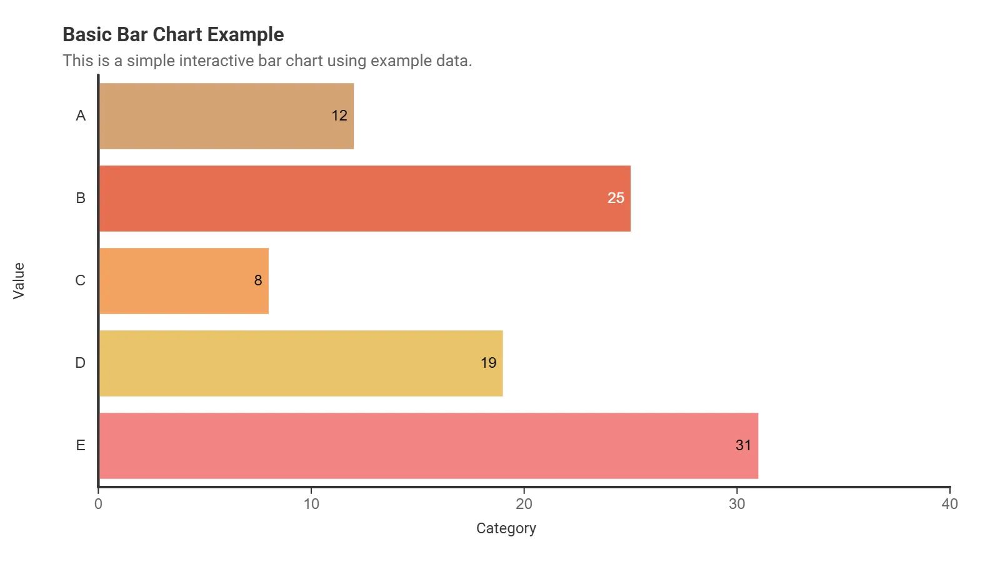
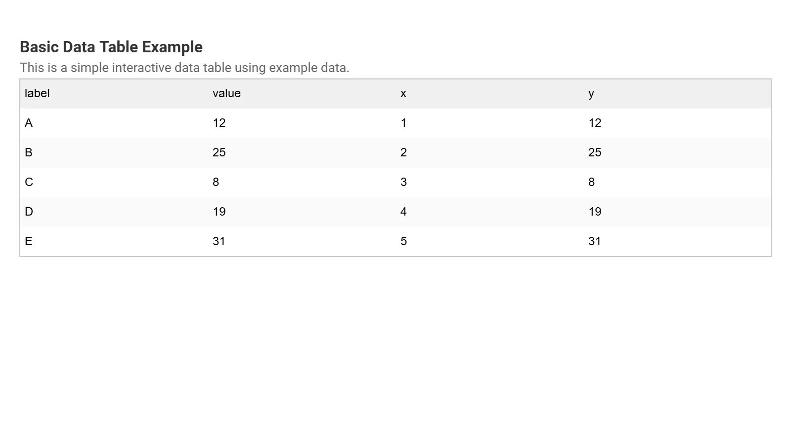
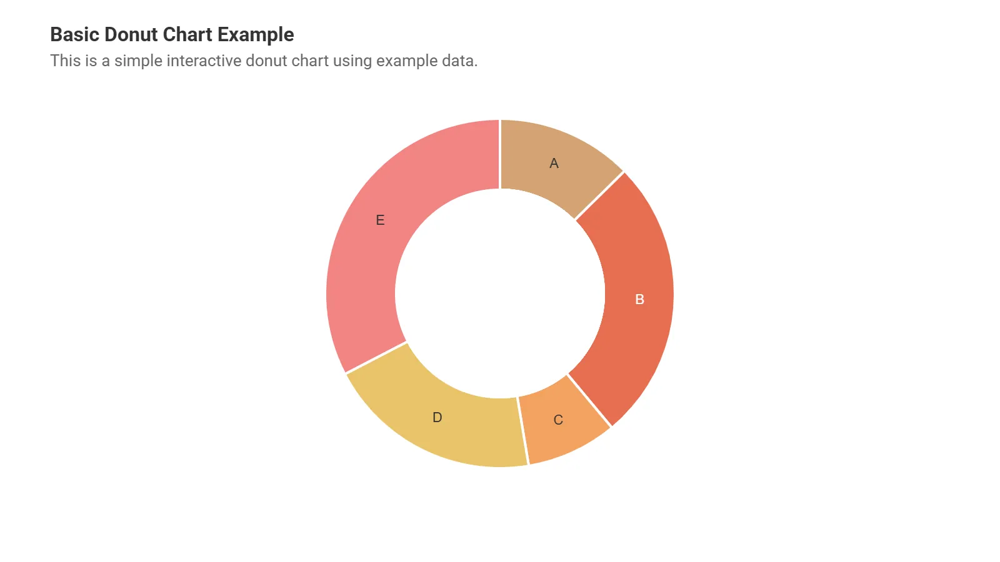
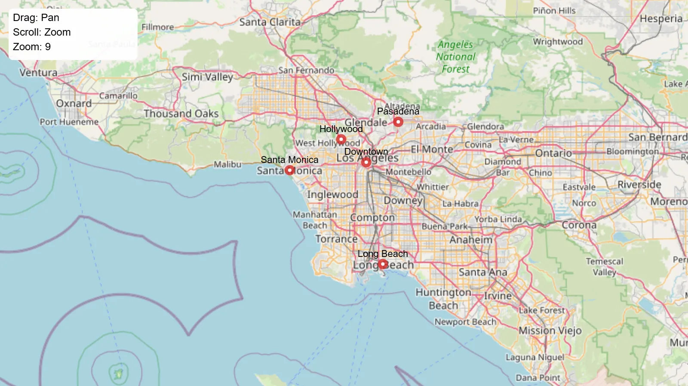
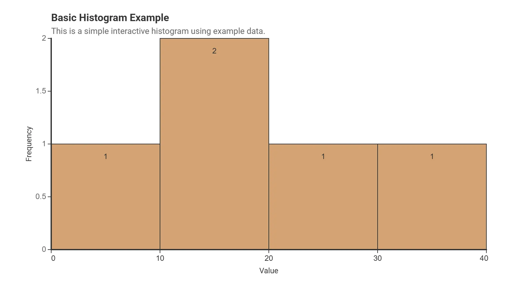
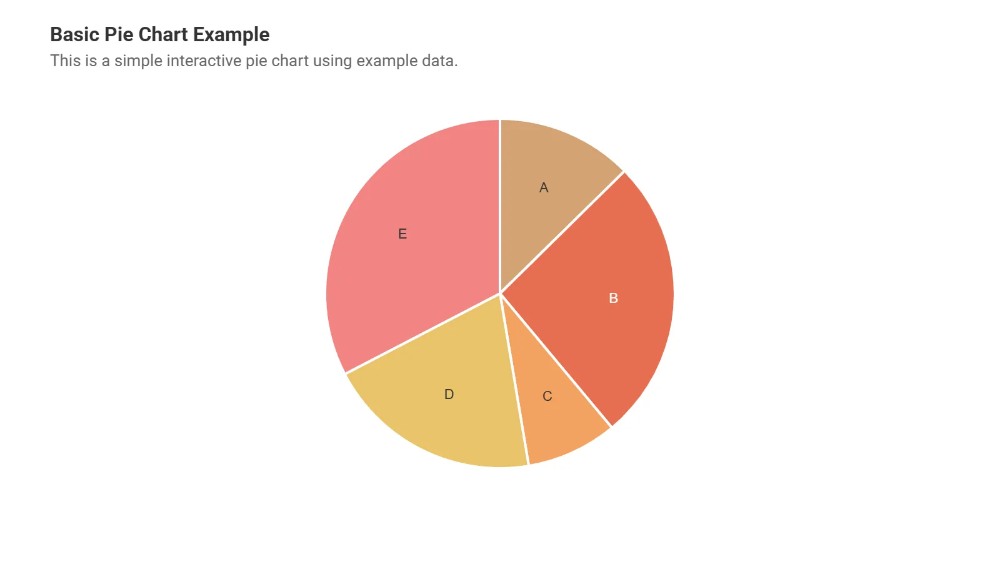
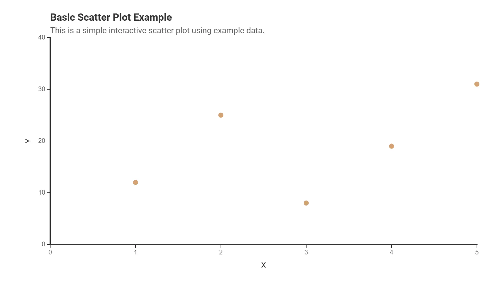
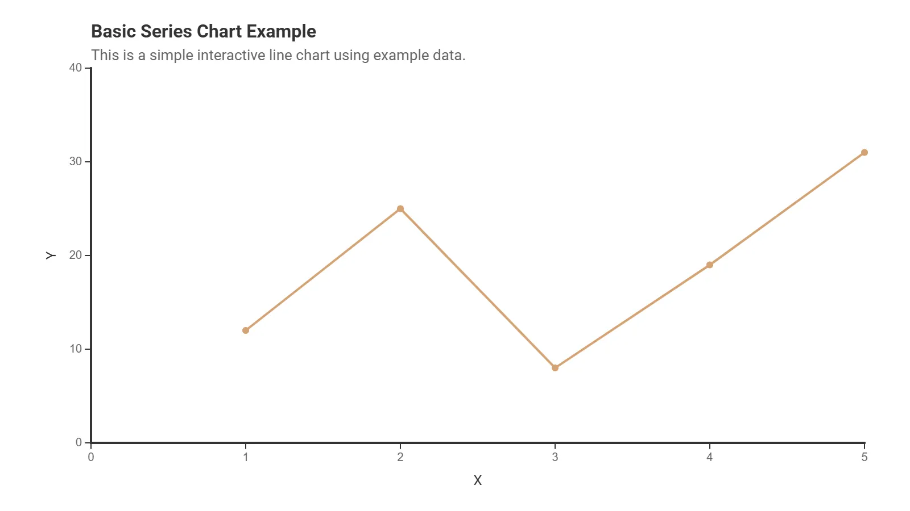
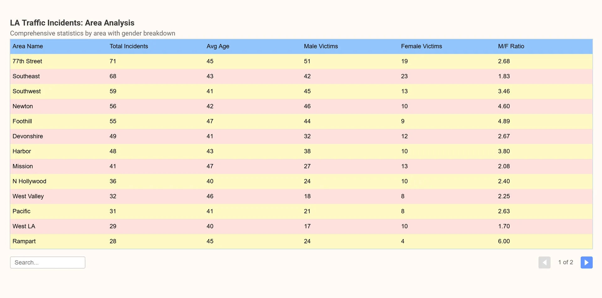
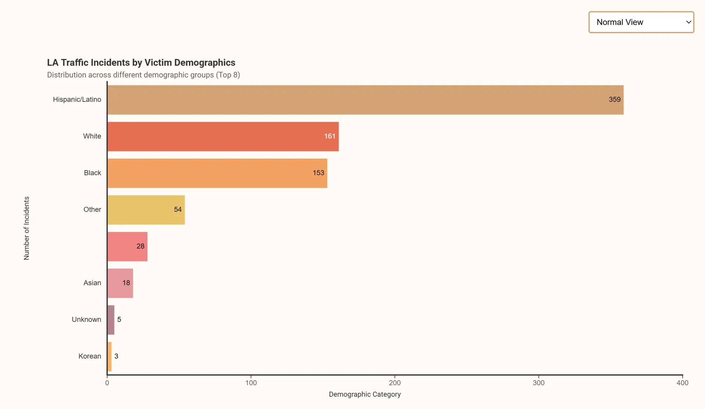
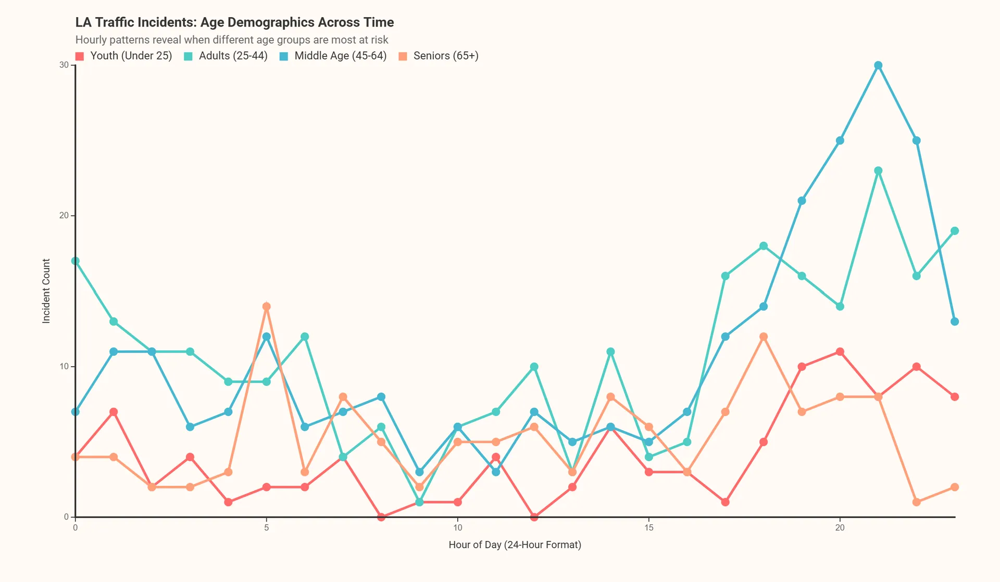
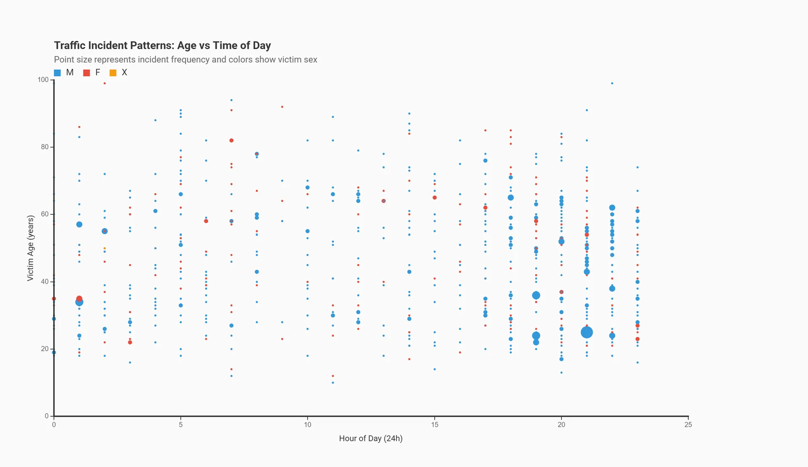
p5.prototype with an immediate mode rendering system, utilizing a DataFrame structure that holds data points as an array of objects. Chart methods map values to pixel coordinates on every frame, handling interaction through continuous hit-testing and managing tooltip overlays with a post-render hook. Users can create, import, and/or analyze datasets to generate diverse, interactive visualizations from methods that offer options for efficient creation and deep customizability.npm install p5.chart.